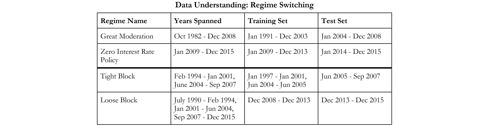

Also See:
Master's Paper: Forecasting the 10-Year US Treasury: Machine Learning Methods vs. Market Expectations
(Posted May 31, 2020)
This paper was written for the class, Special Projects in Economic Research, as a part of NYU’s Master’s in Economics program. While the department does not refer to the paper as such, this is the program’s equivalent of a Master’s thesis. We were allowed to develop our own research question from anywhere in Economics, but were also encouraged to focus on what value our research might add to existing knowledge.
Original: Forecasting the 10-Year US Treasury: Machine Learning Methods vs. Market Expectations
Summary:
In this paper we investigated whether Machine Learning can provide a more accurate forecast of the 10-Year Treasury forward rate than the predictions priced into the existing market data. Since, by the Efficient Market Hypothesis, the forward rate encapsulates the aggregated expectations of the future rate based on available information, we established our baseline model to reflect this. From there we chose two common machine learning methods to compare against the baseline. Specifically, we chose to use LASSO for its feature selection quality, and Regression Trees for their similarity to human decision making.
Since the 10-Year Treasury is typically seen as one of the safest investments available, its forward rate is highly correlated with other Macroeconomic variables. To best capture the trends in the economy, we chose to focus on the leading, coincident and lagging indicators, as described by the Conference Board, and collected from FRED. We chose to collect data at the monthly level, from October 1982 to December 2015, as these dates reflect important changes in Monetary policy. It is from these changes in policy that we get the two distinctions we add to the data. First, we divided the data between two subsets based on the policy of the Federal Reserve at the time, whether it was tightening or loosening interest rates.  The Great Moderation block refers to the time period in which the Federal Reserve began to control inflation. The Zero Interest Rate Policy (ZIRP) is the time period starting in the midst of the Great Recession and is characterized by the Federal Reserve taking a more aggressive role in fighting recessionary trends. The Tight block refers to any time period in which the Federal Reserve increased interest rates. The Loose block refers to any time period in which the Federal Reserve decreased interest rates. We included these subsets, so as to allow the models to capture possible differences in the data that resulted from changes in policy. These distinctions were analyzed separately, we did not group data by the interaction between these classifications.
In addition to fitting a linear relationship, the LASSO model also allowed us to see which variables were determined to have no explanatory power. The variables dropped from each model were:
- Great Moderation: Credit-to-Income, Commercial and Industrial Loans, M3 Money Supply, and Manufacturing and Industrial Sales
- ZIRP: M3 Money Supply, Prime Loan Rate, Tight-dummy
- Tight: M3, Manufacturing and Industrial Sales, Personal Consumption Expenditure, Prime Loan Rates
- Loose: Federal Fiscal Balance, M3 Money Supply
With each model fitted, we calculated the RMSE so that we can compare the accuracy of each model. Every model outperformed the baseline in almost every subgroup. The only exception was Bagged Trees, which underperformed when fit and tested on Great Moderation. From these results we can confirm our original hypothesis: machine learning methods can outperform market expectations in forecasting the 10-Year Treasury forward rate. Moreover, machine learning provides a valuable insight to what are the strongest indicators of trends in the forward rate. Specifically, our models showed strong evidence that Spread and fed funds rate are critical in any analysis of the 10-Year Treasury.
Remarks:
I had originally suggested trying to replicate one of the forecasting models that used conventional econometrics, so that our research question would focus on conventional versus unconventional methods. We were encouraged against doing this because it would invite criticism of our ability to accurately replicate the conventional model from the literature. If I were to redo this project today, I might take a second look at this idea. I think it would also be interesting to try combining the Great Moderation and ZIRP, and Tight and Loose models. That is, include a second set of independent variables that are interacted with a dummy-variable so that we would have two large models instead of four smaller models. Having a dummy variable interacted with each of our independent variables would allow us to fit both models over the full dataset with roughly the same degrees of freedom. It would also allow for the changes in policy to be insignificant instead of assuming them to be significant for all variables, and might allow us to capture whether a policy change had an effect on the predictive power of some variables.